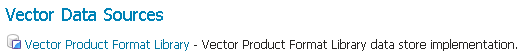
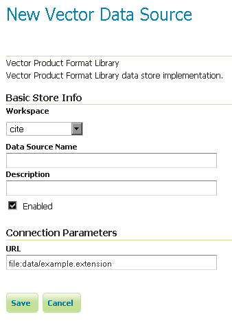

VPF¶
주석
GeoServer는 초기 상태에서 VPF를 지원하지 못 하기 때문에 VPF 확장 모듈(extension)을 설치해야 합니다. 확장 모듈 설치에 대해서는 Installing the VPF extension 섹션을 참조하십시오.
Vector Product Format(VPF)은 미국 국방부가 벡터 기반 디지털 맵을 생산할 때 사용하는 군사 표준 포맷입니다. 더 자세히 알고 싶다면 The National Geospatial-Intelligence Agency를 참조하십시오.
Installing the VPF extension¶
GeoServer download page에서 VPF 확장 모듈을 다운로드하십시오..
경고
GeoServer 인스턴스 버전과 확장 모듈 버전이 일치해야 합니다!
압축 파일의 내용물을 GeoServer 설치 디렉터리의 WEB-INF/lib 디렉터리 안에 풉니다.
Adding a VPF file¶
확장 모듈을 제대로 설치했다면 새 데이터 저장소를 생성할 때 Vector Data Sources 목록에서 Vector Product Format Library 옵션을 볼 수 있을 것입니다.

벡터 데이터 저장소 목록의 VPF 옵션
Configuring a VPF data store¶

VPF 데이터 저장소 설정하기
이전: GML